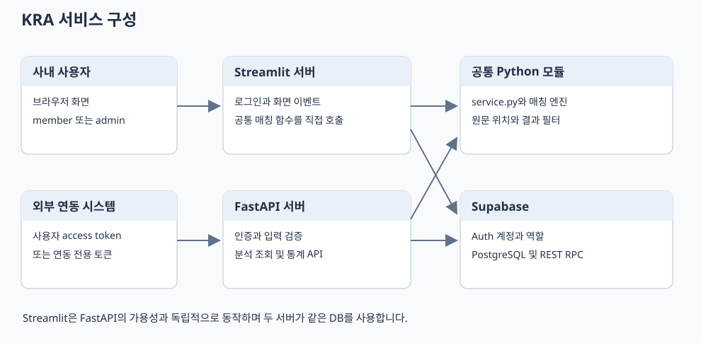
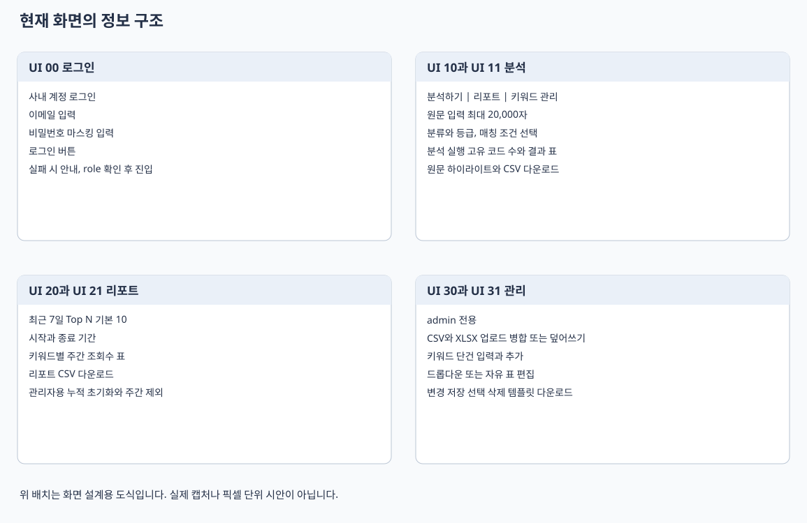
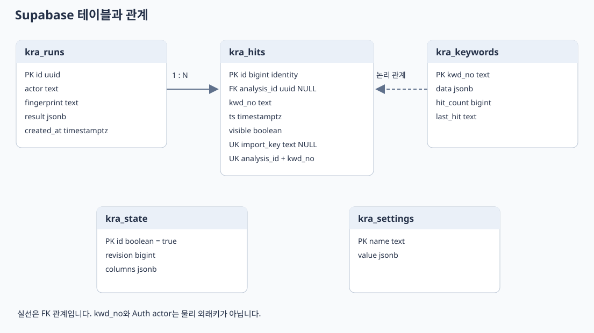

Keyword Risk Analyzer 통합 설계서
시스템 구조부터 API 화면 Supabase 분석 규칙과 운영 검수까지 연결한 개발 인수인계 문서입니다.
버전 1.0 · 2026년 10월 21일 · Streamlit + FastAPI + Supabase
Keyword Risk Analyzer 설계 문서 안내
문서 버전 1.0 · 작성 기준 2026년 10월 21일 한국 시간
이 문서 묶음은 현재 Streamlit 화면과 FastAPI 코드, Supabase에 설치된 kra_ 테이블과 함수를 기준으로 작성한 구현 기준 설계서입니다. 개발자 인수인계, 외부 시스템 연동, 운영 설정과 기능 검수에 사용합니다. 계획만 있는 기능은 구현 완료 기능과 구분했습니다.
문서 구성
| 문서 | 주요 독자 | 내용 |
|---|---|---|
| 시스템 설계서 | 기획자와 개발자 | 범위, 기능 요구사항, 아키텍처, 권한과 모듈 |
| API 설계서 | 연동 개발자 | 인증, 7개 경로, 요청과 응답, 오류와 재시도 |
| 화면 설계서 | 기획자와 화면 개발자 | 화면 ID, 배치, 입력, 이벤트, 권한과 예외 |
| Supabase 설계서 | 백엔드와 DB 담당자 | ERD, 5개 테이블, 원장 13개 컬럼, RPC 10개 |
| 분석 로직 설계서 | 분석 로직 담당자 | 매칭 모드, 정규화, 겹침 처리, 집계 규칙 |
| 운영 배포와 검증 설계서 | 운영자와 검수자 | 환경 설정, 배포, 이관, 장애 처리, 테스트 |
design_book.html은 위 문서를 한 파일로 열람하고 인쇄할 수 있는 통합본입니다. 외부 스크립트나 폰트를 내려받지 않습니다. assets의 SVG는 구성도와 화면 배치도이며, 실제 브라우저 캡처가 아닙니다.
openapi.runtime.json은 현재 FastAPI가 생성한 원본입니다. openapi.json은 여기에 문서용 응답 스키마와 오류 설명을 보충한 연동 명세입니다. 응답 모델이 실제 서버에서 강제 검증되는 것은 아닙니다.
사실과 변경 제안의 구분
- 구현: 코드 또는 DB 메타데이터에서 확인한 현재 동작입니다.
- 관찰: 문서 작성 시점의 데이터 수와 설치 상태이며 운영 중 달라질 수 있습니다.
- 개선 제안: 현재 구현 범위에 포함되지 않습니다. 새 작업으로 검토해야 합니다.
- 예제 데이터는 설명용입니다. 실제 계정, 비밀번호, 서버 키와 연동 토큰을 수록하지 않습니다.
관찰된 설치 상태
| 항목 | 관찰 값 |
|---|---|
| 업무 저장소 | Supabase 프로젝트 qmhdwfqcihpfjfvcjcwa |
| 프로젝트 리전 | Singapore |
| 키워드 | 1,431건 |
| 조회 이벤트 | 9,045건 |
| 분석 실행 기록 | 4건 |
| 키워드와 공통 설정 revision | 1 |
| 원장 컬럼 | 13개 |
| 앱 전용 테이블 RLS | 5개 모두 활성화 |
| 서버 함수 권한 방식 | SECURITY INVOKER 및 서버 전용 EXECUTE |
DB 조회 날짜는 서버 UTC로 2026년 10월 20일이었으며, 문서 작성일은 한국 시간 2026년 10월 21일입니다. 위 수량은 이번 문서 작성 중 읽기 전용 조회로 확인했으며 실시간 지표는 아닙니다.
원본과 갱신 방법
기준 소스는 keyword_app2_fixed270.py, api.py, service.py, repository.py, matching_engine.py, app_config.py, supabase/schema.sql, supabase/fix_reset_counts.sql, render.yaml, tests입니다. 원본 코드와 설계서가 다르면 코드와 실제 DB를 먼저 확인하고 문서를 갱신합니다.
.\.venv\Scripts\python.exe scripts/build_design_docs.py이 명령은 문서와 OpenAPI 산출물만 생성합니다. 계정 생성, DB 이관, 조회수 초기화나 배포를 실행하지 않습니다. 스냅샷 수량은 자동 실시간 조회가 아니라 위 관찰 기록입니다.
Keyword Risk Analyzer 시스템 설계서
문서 ID KRA SYS 001 · 버전 1.0 · 기준일 2026년 10월 21일
목적과 서비스 범위
등록된 키워드와 리스크 기준을 이용해 입력 문장의 위험 표현을 찾고, 검출 위치와 심의 기준을 보여주는 사내 업무 도구입니다. 관리자는 원장과 분석 설정을 관리하고 사용자는 분석과 공유 통계를 조회합니다. 분석은 규칙 기반 Python 엔진에서 수행하며 외부 생성형 AI를 호출하지 않습니다. 결과는 등록된 원장과 매칭 규칙에 따른 검출 정보이며 자동 심의 승인이나 법적 적합성 판정은 구현 범위에 없습니다.
현재 운영 형태는 Streamlit과 별도 FastAPI가 같은 Supabase 프로젝트를 사용하는 구성입니다. React 화면, 과금, 조직별 독립 저장소, 비동기 대량 작업은 구현하지 않았습니다.
사용자와 권한
| 행위 | 미인증 | member | admin | API 연동 토큰 |
|---|---|---|---|---|
| 앱 키워드와 분석 화면 조회 | 불가 | 가능 | 가능 | 화면 로그인 불가 |
| 문장 분석 | 불가 | 가능 | 가능 | API에서 가능 |
| 키워드 CSV와 공유 통계 조회 | 불가 | 가능 | 가능 | 제공된 API 범위에서 가능 |
| 본인 저장 분석 결과 조회 | 불가 | API에서 가능 | API에서 본인 결과 가능 | 동일 연동 주체의 결과 가능 |
| 타인 분석 결과 조회 | 불가 | 불가 | 관리자라도 일반 API로는 불가 | 불가 |
| 원장 등록 편집 삭제 업로드 | 불가 | 불가 | Streamlit에서 가능 | 불가 |
| 공통 매칭 설정과 조회수 초기화 | 불가 | 불가 | Streamlit에서 가능 | 불가 |
| 공개 프로세스 상태 확인 | 가능 | 가능 | 가능 | 가능 |
앱 권한은 Supabase Auth의 app_metadata.role에 저장합니다. 허용 값은 member와 admin입니다. 사용자 편집이 가능한 user_metadata는 권한 근거로 사용하지 않습니다. API 연동 토큰은 별도 서버 환경 변수와 비교하고 호출 주체를 문자열 integration으로 처리합니다. 한 연동 토큰을 공유하는 시스템은 동일 주체입니다.
기능 요구사항과 구현 추적
| ID | 요구사항 | 구현 위치 | 상태 |
|---|---|---|---|
| FR 01 | 사내 계정 로그인과 관리자 구분 | render_cloud_login 및 current_actor | 구현 |
| FR 02 | 정확 유사 부분 문자열 분석 | service.match_text 및 matching_engine | 구현 |
| FR 03 | 카테고리와 리스크 결과 필터 | service.match_text | 구현 |
| FR 04 | 원문 하이라이트와 툴팁 | highlight_text 및 Streamlit 컴포넌트 | 구현 |
| FR 05 | 원장 CSV와 Excel 가져오기 | normalize_upload 및 관리 탭 | 구현 |
| FR 06 | 키워드 등록 편집 삭제 | 관리자 화면 및 kra_save_keywords | 구현 |
| FR 07 | 조사 어미와 무시 기호 설정 | 설정 저장 함수 및 kra_settings | 구현 |
| FR 08 | 분석별 고유 키워드 조회수 집계 | kra_record_analysis | 구현 |
| FR 09 | 최근 7일 Top N 리포트 | 관리 화면과 kra_recent_hits | 구현 |
| FR 10 | 누적 초기화와 주간 초기화 | kra_reset_counts 및 kra_reset_week | 구현 |
| FR 11 | 별도 분석 조회 통계 API | api.py | 구현 |
| FR 12 | 여러 조직의 데이터 격리 | 조직 식별자와 정책 없음 | 미구현 |
| FR 13 | 키워드 편집 이력과 승인 절차 | 감사 테이블과 승인 상태 없음 | 미구현 |
전체 아키텍처

사내 사용자 브라우저 → Streamlit 서버 → 공통 매칭 함수 → Python 엔진
└→ SupabaseRepository → Supabase REST RPC와 Auth
외부 연동 시스템 → FastAPI 서버 → analyze → 공통 매칭 함수 → Python 엔진
└→ SupabaseRepository → 같은 Supabase 프로젝트Streamlit은 FastAPI를 HTTP로 호출하지 않습니다. API 프로세스 중단이 곧바로 Streamlit 분석 중단으로 이어지지는 않습니다. 두 프로세스 모두 Supabase와 Python 실행 환경이 필요합니다.
공통화된 범위는 매칭 엔진, 결과 필터와 저장소 모듈입니다. Streamlit의 버튼 처리와 API의 analyze가 완전히 같은 최상위 함수로 통합된 것은 아닙니다. 옵션 기본값과 결과 없는 분석의 저장 방식에도 차이가 있습니다.
모듈 책임
| 파일 | 책임 | 주요 외부 의존 |
|---|---|---|
| keyword_app2_fixed270.py | 화면, 로그인 세션, 편집, 하이라이트, 파일 입출력 | Streamlit, pandas |
| api.py | 요청 검증, 인증, 라우팅, 예외 응답 | FastAPI, Pydantic |
| service.py | API 분석 흐름과 공통 후처리 필터 | 매칭 엔진, 저장소 |
| matching_engine.py | 정규화, 후보 생성, 위치와 겹침 처리 | pandas, Python re |
| repository.py | 서버 전용 REST RPC 및 Auth 호출 | requests |
| app_config.py | 프로세스 환경, 로컬 설정과 저장 모드 | os, pathlib |
| supabase/schema.sql | 테이블, 제약, 인덱스, 함수와 접근권한 | PostgreSQL |
| scripts/import_to_supabase.py | 원장과 로그의 초기 이관 | pandas, 저장소 |
분석과 집계 처리
- 로그인 정보와 역할을 확인합니다.
- 키워드 전체, 컬럼 순서와 revision을 단일 스냅샷으로 읽습니다.
- 매칭 옵션과 공통 설정을 구성하고 원문 위치를 보존하며 분석합니다.
- 카테고리와 리스크 필터를 적용합니다. 화면 명칭은 사전 필터지만 실제 처리는 매칭 후입니다.
- API의
record=true또는 Streamlit의 검출 성공 시 저장 함수를 호출합니다. - 저장 함수는 revision과 요청 중복을 검사하고 분석 기록, 고유 키워드별 이벤트와 누적 조회수를 하나의 트랜잭션에서 갱신합니다.
- 화면 또는 JSON 결과를 반환합니다.
정합성과 동시성
관리자 저장과 분석 기록은 kra_state의 단일 행을 잠가 짧은 쓰기 구간을 직렬화합니다. 매칭 연산 자체는 DB 잠금 밖에서 실행합니다. 원장이나 공통 설정이 분석 중 바뀌면 저장 시 revision 충돌을 반환합니다. 원장 편집 시 기존 키워드의 조회수와 마지막 출력일자를 보존합니다.
revision은 원장과 공통 설정 변경 버전입니다. 조회수 증가나 초기화 때 증가하는 데이터 전체 버전은 아닙니다. 분석별 별도 엔진 버전이나 공통 설정 전체 스냅샷은 현재 저장하지 않습니다.
보안 경계
브라우저에는 서버 비밀 키를 전달하지 않습니다. kra_ 테이블은 RLS를 활성화하고 일반 클라이언트 역할의 직접 권한을 회수했습니다. 서버 키는 RLS를 우회하므로 앱의 역할 검사와 분석 소유자 검사가 실제 사용자 접근 경계입니다. 키를 가진 서버 코드를 신뢰하는 구조이며 사용자별 RLS가 적용된 브라우저 직접 접근 구조가 아닙니다.
원문 전체를 DB에 저장하지 않지만 입력 지문, 검출 단어와 기준은 저장됩니다. 원문과 세션 토큰은 앱 메모리에 존재할 수 있습니다. 로컬 .env와 Streamlit Secrets는 배포 산출물과 문서에 포함하지 않습니다.
현재 제약과 개선 제안
| 항목 | 현재 상태 | 개선 제안 |
|---|---|---|
| 성능 목표 | 처리량과 응답 시간 SLA 미정 | 실제 문장 길이와 동시 사용자로 목표 설정 |
| 매칭 캐시 | 전체 원장 스냅샷을 매 분석에서 조회 | revision 기반 캐시를 측정 후 도입 |
| 이력 재현 | 결과와 revision만 저장 | 엔진 버전과 설정 스냅샷 추가 |
| 연동 주체 | 정적 토큰 하나에 integration 주체 하나 | 연동처가 늘면 토큰별 식별과 폐기 추가 |
| 감사와 복구 | 변경 감사 로그와 자동 복구 절차 없음 | 원장 변경 이력과 복원 훈련 추가 |
| 입력 제한 | API 스키마 검증, UI 최대 글자수 설정 | Streamlit 서버 측 동일 검증 추가 |
| 호스팅 | Render 설정 파일 존재, 공개 배포 미확인 | 배포 후 로그인과 상태 확인 검수 |
기준 소스
api.py, service.py, repository.py, matching_engine.py, keyword_app2_fixed270.py, app_config.py, supabase/schema.sql, render.yaml을 기준으로 작성했습니다. 관련 설계의 상세 규약은 같은 폴더의 API, 화면, DB와 운영 문서를 참조합니다.
Keyword Risk Analyzer API 설계서
문서 ID KRA API 001 · API 버전 1.0.0 · 기준일 2026년 10월 21일
인터페이스 원칙
FastAPI가 제공하는 HTTP JSON API입니다. 로컬 기본 주소는 http://127.0.0.1:8000이며 운영 도메인은 아직 확정하지 않았습니다. 업무 경로는 /api/v1 아래에 있고 상태 확인 경로는 루트에 있습니다. 요청과 응답은 UTF 8 JSON으로 처리합니다. 공개 운영에서는 HTTPS를 사용합니다.
API를 통한 키워드 등록 편집 삭제와 관리자 초기화 경로는 없습니다. 해당 기능은 Streamlit 관리자 화면을 이용합니다. 현재 상태는 동기 요청 처리이며 작업 접수 후 202를 반환하는 비동기 API가 아닙니다.
인증과 호출 주체
Authorization: Bearer <USER_ACCESS_TOKEN_OR_INTEGRATION_TOKEN>
Content-Type: application/json- Supabase 사용자 access token은 Auth 서버에서 확인하고
app_metadata.role이 member 또는 admin인지 검사합니다. 호출 주체는 사용자 UUID입니다. - 별도 API 연동 토큰은
API_ACCESS_TOKEN과 상수 시간 비교를 수행하고 호출 주체를integration으로 설정합니다. - Supabase 서버 비밀 키 자체를 외부 호출자에게 제공하지 않습니다.
- 관리자 계정도 저장된 분석 조회 시 타인 소유자 검사를 우회하지 않습니다.
- API 자체에 로그인, 토큰 갱신 또는 비밀번호 변경 경로는 없습니다.
경로 목록
| ID | 메서드와 경로 | 인증 | 성공 코드 | 기능 |
|---|---|---|---|---|
| API 01 | GET /healthz | 없음 | 200 | 프로세스 상태 |
| API 02 | GET /readyz | 필요 | 200 | DB 스냅샷 접근 가능 여부 |
| API 03 | POST /api/v1/analyses | 필요 | 200 | 분석과 선택적 기록 |
| API 04 | GET /api/v1/analyses/{analysis_id} | 필요 | 200 | 본인 저장 결과 조회 |
| API 05 | GET /api/v1/keywords | 필요 | 200 | 키워드 조회 검색 페이지 |
| API 06 | GET /api/v1/reports/top-keywords | 필요 | 200 | 기간별 공유 Top N |
| DOC 01 | GET /openapi.json | 없음 | 200 | 기본 FastAPI 명세 |
업무 API 4개 작업과 상태 확인 2개 작업이 런타임 OpenAPI에 등록돼 있습니다. 기본 OpenAPI 제공 경로는 별도입니다. /docs는 API_DOCS_ENABLED=true일 때만 열리고 /redoc은 비활성화돼 있습니다. 기본 /openapi.json은 현재 설정에서 별도로 비활성화하지 않았습니다.
API 01과 API 02 상태 확인
GET /healthz는 {"status":"ok"}를 반환합니다. DB 장애나 잘못된 서버 키가 있어도 프로세스가 실행 중이면 성공할 수 있습니다.
GET /readyz는 인증 후 kra_snapshot을 호출하고 {"status":"ready"}를 반환합니다. 이 호출은 읽기 경로만 검사합니다. 쓰기 권한, Auth 이메일 로그인, SMTP까지 모두 정상임을 보장하는 검사는 아닙니다.
API 03 분석 실행
요청 필드
| 필드 | 형식 | 필수 | 기본값 | 검증과 의미 |
|---|---|---|---|---|
| text | string | 예 | 없음 | 길이 1 이상 20,000 이하 |
| mode | enum | 아니오 | similar | exact, similar, partial |
| exact_relaxed | boolean | 아니오 | false | 완화 정규화 옵션 |
| partial_min_len | integer | 아니오 | 2 | 2 이상 30 이하 |
| similar_reverse_single | boolean | 아니오 | true | 단일 토큰 입력의 역매칭 |
| similar_reverse_any | boolean | 아니오 | false | 토큰 수 무관 역매칭 |
| categories | string array | 아니오 | [] | 최대 100개, 결과 카테고리 필터 |
| risks | string array | 아니오 | [] | 최대 20개, 결과 등급 필터 |
| record | boolean | 아니오 | false | 분석 결과와 집계를 DB에 기록 |
| analysis_id | UUID 또는 null | 아니오 | null | 생략 시 서버에서 새 UUID 생성 |
정의하지 않은 요청 필드는 허용하지 않아 422를 반환합니다. 공백만 있는 text를 거절하는 별도 검증은 없습니다. 필터 항목의 문자열 길이나 실제 원장 값 존재 여부도 별도 검증하지 않습니다. Pydantic의 기본 변환 규칙을 사용하며 모든 필드에 strict 모드를 지정한 것은 아닙니다.
요청 예시
{
"text": "필러와 필러",
"mode": "exact",
"exact_relaxed": true,
"categories": ["화장품"],
"risks": [],
"record": true,
"analysis_id": "b96293da-c6fc-44f8-8c1b-ebee5ee89f21"
}성공 응답 예시
아래 예시는 필러가 설명용 코드 B118로 등록된 가상 원장 기준입니다. 실제 검출 개수와 등급은 현재 원장에 따라 달라집니다.
{
"analysis_id": "b96293da-c6fc-44f8-8c1b-ebee5ee89f21",
"matches": [
{"term":"필러","start":0,"end":2,"category":"화장품","risk":"1등급(사용금지)","detail":"예시 심의 기준","kwd_no":"B118"},
{"term":"필러","start":4,"end":6,"category":"화장품","risk":"1등급(사용금지)","detail":"예시 심의 기준","kwd_no":"B118"}
],
"unique_keywords": ["B118"],
"keyword_revision": 1,
"offset_unit": "unicode_codepoint",
"end_exclusive": true,
"recorded": true
}| 응답 필드 | 형식 | 의미 |
|---|---|---|
| analysis_id | string UUID | 분석 식별자 |
| matches | Match array | 위치별 검출 결과. 같은 키워드가 여러 번 존재 가능 |
| unique_keywords | string array | kwd_no를 중복 제거하고 문자열 정렬한 목록 |
| keyword_revision | integer | 분석에 사용한 원장과 공통 설정 버전 |
| offset_unit | string | 현재 고정 값 unicode_codepoint |
| end_exclusive | boolean | 현재 true |
| recorded | boolean | DB 기록 요청 여부. true 응답은 기록 함수 성공 후 반환 |
Match는 term, start, end, category, risk, detail, kwd_no 필드로 구성합니다. kwd_no는 엔진 자료형상 null일 수 있으나 정상 원장은 비어 있지 않은 고유 코드를 사용합니다. 대체어와 증빙 유형은 Match 응답에 포함되지 않으며 키워드 조회 API에서 확인합니다.
위치와 하이라이트 규약
start는 0부터 시작하고 end는 마지막 문자 다음 위치입니다. Python에서는 text[start:end]로 구간을 얻습니다. JavaScript의 일반 문자열 인덱스는 UTF 16 단위이므로 이모지가 포함된 원문에서는 Array.from(text).slice(start,end).join('')처럼 code point 기준으로 변환해야 합니다. 표시 구간이 항상 원장 term 문자열과 동일하다고 가정하면 안 됩니다. 정규화와 겹침 병합으로 원문 표시 구간이 넓어질 수 있습니다.
저장과 재시도
record=false이면 DB에 분석 결과와 조회수를 기록하지 않습니다. 이 경우 analysis_id를 받더라도 결과 조회 API에서 찾을 수 없습니다. record=true이면 검출 결과가 없어도 API는 분석 실행 기록을 남깁니다. 저장 전 원장 revision을 검사합니다.
입력 지문은 analysis_id와 record를 제외한 요청 객체를 키 정렬 JSON으로 직렬화한 SHA 256 값입니다. 동일 ID와 호출 주체 및 지문이면 기존 결과를 반환하고 조회수를 다시 올리지 않습니다. 다른 입력이나 다른 주체가 같은 ID를 사용하면 409입니다. 같은 ID를 생략해 재시도하면 새 분석으로 처리되므로 기록 요청에는 클라이언트가 UUID를 생성해 재사용하는 것을 권장합니다.
동일 입력 지문에는 엔진 버전이나 조회된 공통 설정 값 자체가 들어가지 않습니다. 이미 기록된 ID는 설정이 바뀌어도 이전 결과를 반환합니다. 새 설정으로 재분석하려면 새 analysis_id가 필요합니다.
API 04 저장된 분석 조회
경로 변수 analysis_id는 UUID입니다. 결과가 있으면 분석 실행의 결과 JSON을 반환합니다. 존재하지 않으면 404입니다. 현재 구현은 타인 ID 조회에도 409를 반환합니다. 소유자가 아닌 경우 404로 숨기는 방식으로 구현된 것은 아닙니다.
API 05 키워드 조회
| 쿼리 | 형식 | 기본값 | 허용 범위 |
|---|---|---|---|
| offset | integer | 0 | 0 이상 |
| limit | integer | 100 | 1 이상 500 이하 |
| q | string | 빈 문자열 | 최대 200자 |
kwd_no 기준 문자열 안정 정렬 후 키워드명에 q가 포함되는 행을 대소문자 구분 없이 찾습니다. 정규식 검색이 아닙니다. total은 검색 조건에 맞는 전체 개수이고 items에 현재 페이지를 반환합니다.
{
"total": 1,
"revision": 1,
"items": [{"kwd_no":"B118","키워드명":"필러","상품카테고리":"화장품","리스크 등급":"1등급(사용금지)","키워드 조회 수(누적카운트)":"0"}]
}위 items는 축약 예시입니다. 실제 행에는 원장의 13개 컬럼이 포함될 수 있고 값은 문자열입니다. API는 DB에서 전체 스냅샷을 읽은 뒤 Python에서 검색과 페이지 분할을 합니다. 대량 데이터용 DB 페이지 검색으로 구현된 것은 아닙니다.
API 06 기간별 Top N
days는 기본 7, 범위 1부터 366입니다. limit은 기본 10, 범위 1부터 100입니다. 서버 DB 시각에서 과거 days일 구간의 visible 이벤트를 집계합니다. 같은 건수면 kwd_no 오름차순이며 조회수는 전체 사용자 공유 통계입니다.
{"items":[{"kwd_no":"B118","hit_count":3,"term":"필러"}]}삭제된 원장 항목의 이벤트도 남아 있으므로 term은 null일 수 있습니다. 기간에 해당하는 visible 이벤트가 없으면 items는 빈 배열입니다.
오류와 재시도 규약
| HTTP | 발생 조건 | 응답 형태 | 호출자 처리 |
|---|---|---|---|
| 401 | Bearer 누락, 잘못된 토큰, 역할 미지정 | detail 문자열 | 재인증 또는 역할 확인 |
| 404 | 본인 조회 ID가 없음 | detail 문자열 | ID와 record 설정 확인 |
| 409 | ID 지문 소유자 충돌, revision 충돌, DB 중복 제약 | detail 문자열 | 원인에 따라 ID 또는 최신 데이터 확인 |
| 422 | 길이 범위, mode, UUID, 미정의 필드 오류 | detail 오류 배열 | 요청 필드 수정 |
| 503 | Supabase 연결 장애, 키 또는 권한 문제, CSV 모드 | detail 문자열 | 운영 연결과 서버 설정 확인 |
| 500 | 처리하지 못한 예외 | 서버 기본 처리 | 서버 로그 확인 |
{"detail":"Bearer token required"}인증 누락의 401에는 WWW-Authenticate: Bearer 헤더가 있습니다. 모든 401이 동일 헤더를 명시하는 것은 아닙니다. DB SQLSTATE 40001과 23505는 ConflictError로 변환합니다. 그 밖의 DB 오류는 구체적인 SQL 메시지 대신 일반 연결 실패 응답이 나갈 수 있습니다. 명시적인 요청 자동 재시도나 Retry After 헤더는 구현하지 않았습니다.
운영과 연동 제약
- 별도 CORS 허용 목록과 브라우저 교차 출처 연동 설정이 없습니다.
- 앱 자체의 rate limit, 배치 분석 API, 비동기 큐와 요청별 타임아웃 취소는 없습니다.
- Supabase HTTP 연결 타임아웃은 5초, 읽기 타임아웃은 30초입니다. 여러 호출을 포함한 전체 API 제한 시간과는 다릅니다.
- 현재 라우트에는 response_model이 없어 서버 응답 스키마의 Pydantic 강제 검증이 없습니다.
openapi.runtime.json은 자동 생성 원본입니다. 보충 명세의 응답 구조는 현재 반환 코드에 근거한 문서 규약입니다.
기준 소스
api.py의 AnalysisRequest, current_actor와 각 라우트, service.py의 analyze, repository.py의 request, supabase/schema.sql의 분석과 통계 RPC를 기준으로 작성했습니다.
Keyword Risk Analyzer 화면 설계서
문서 ID KRA UI 001 · 버전 1.0 · 기준일 2026년 10월 21일
화면 구성과 적용 범위
현재 Streamlit 화면을 업무 단위로 나눈 설계입니다. 화면 ID는 인수인계용 식별자이며 실제 URL 경로가 아닙니다. 로그인 후 하나의 앱에서 분석하기, 리포트, 키워드 관리 탭을 전환합니다. 배치도는 현재 위젯의 정보 구조를 정리한 것으로 정확한 픽셀 크기나 브라우저 캡처를 의미하지 않습니다.

| 화면 ID | 화면과 영역 | 진입 조건 | 주요 연결 |
|---|---|---|---|
| UI 00 | 사내 계정 로그인 | Supabase 모드의 미인증 사용자 | Auth 로그인 |
| UI 01 | 공통 사이드바와 탭 | 유효한 member 또는 admin | 최신 원장 불러오기, 로그아웃 |
| UI 10 | 분석 입력과 실행 옵션 | 로그인 완료 | 공통 매칭 함수 |
| UI 11 | 분석 결과와 하이라이트 | 검출 성공 | 원장 정보, 결과 CSV |
| UI 12 | 키워드 목록과 필터 | 로그인 완료 | 원장 조회와 CSV |
| UI 20 | 주간 리포트 | 로그인 완료 | 최근 7일 이벤트 |
| UI 21 | 조회수 초기화 | admin | 누적 초기화, 주간 제외 |
| UI 30 | 업로드와 단건 등록 | admin | 원장 저장 |
| UI 31 | 키워드 표 편집과 삭제 | admin | 원장 저장 |
| UI 32 | 공통 선택값과 매칭 설정 | admin 저장 권한 | 공통 설정 저장 |
UI 00 사내 계정 로그인
화면에는 이메일, 비밀번호 입력과 로그인 버튼을 배치합니다. 비밀번호는 password 입력 형식으로 마스킹합니다. 입력 후 폼 제출 시 Supabase Auth의 password 로그인 경로를 호출합니다. 앱에는 계정 가입이나 비밀번호 찾기 화면이 없습니다.
| 요소 | 형식 | 이벤트와 처리 |
|---|---|---|
| 이메일 | 텍스트 입력 | Supabase Auth로 전달 |
| 비밀번호 | 마스킹 입력 | 서버 메모리에서 인증 요청 |
| 로그인 | 폼 제출 버튼 | 성공 시 세션 저장 후 앱 재실행 |
| 오류 안내 | 오류 메시지 | 계정과 연결 설정을 확인하도록 표시 |
로그인 전에는 원장과 보고서 데이터를 조회하지 않습니다. 로그인 후에도 role이 member 또는 admin이 아니면 앱 접근을 중단합니다. 세션 만료가 60초 이내이면 refresh token으로 갱신하고, 앱 재실행마다 사용자와 역할을 Auth 서버에서 확인합니다.
UI 01 공통 영역
사이드바에는 로그인 이메일, 로그아웃, 공유 저장소 안내와 최신 데이터 불러오기를 둡니다. 최신 데이터 불러오기는 원장 DataFrame, revision과 컬럼 순서를 갱신하고 리포트 캐시를 지웁니다. 로그아웃은 서버 세션 종료를 요청하고 현재 Streamlit 세션을 비웁니다.
CSV 개발 모드에서는 공용 관리자 비밀번호와 관리자 전용 경로 변경 기능을 사용합니다. Supabase 모드에서는 임의 로컬 파일 경로를 운영 저장소로 선택하지 않습니다.
UI 10 분석 입력과 옵션
[분석하기] [리포트 주간 Top N] [키워드 관리]
① 텍스트 입력
[분석할 원문 ]
② 분석 실행
[카테고리 복수 선택] [리스크 등급 복수 선택] [매칭 조건]
[완화 정규화] [모드별 추가 옵션]
[조사 어미 설정 펼치기] [무시 기호 설정 펼치기]
[텍스트 분석하기]| 입력 | 화면 초기값과 범위 | 처리 |
|---|---|---|
| 분석할 텍스트 | 예시 문장, 위젯 최대 20,000자 | 원문을 매칭 함수에 전달 |
| 상품카테고리 | 전체 의미의 빈 선택 | 매칭 후 결과 필터 |
| 리스크 등급 | 전체 의미의 빈 선택 | 매칭 후 결과 필터 |
| 매칭 조건 | 정확 일치 | 정확 유사 부분 문자열 중 하나 |
| 완화 정규화 | 체크됨 | exact_relaxed=true |
| 부분 문자열 최소 글자수 | 2, 2부터 20 | 부분 문자열 모드에서 표시 |
| 단일 입력 역매칭 | true | 유사 모드에서 표시 |
| 토큰 수 무관 역매칭 | false | 유사 모드에서 표시 |
API 기본값은 mode=similar, exact_relaxed=false이고 부분 문자열 상한은 30입니다. 같은 결과를 비교할 때는 화면에서 선택한 옵션을 API에 모두 명시합니다. 글자수는 위젯 제한이며 현재 Streamlit 서버 코드에서 API와 같은 별도 Pydantic 검증을 수행하지 않습니다.
분석 버튼을 누르면 최신 원장을 읽고 클라우드 공통 설정을 다시 읽습니다. 검출된 고유 코드가 있으면 새 UUID로 분석을 기록하고 조회수를 증가시킵니다. 검출이 없으면 안내만 표시하며 Streamlit에서는 분석 실행 행을 저장하지 않습니다. 같은 버튼을 다시 누르면 새로운 분석으로 집계합니다.
UI 11 결과와 하이라이트
검출 성공 시 고유 키워드 수, 원장 정보 표, 위치 표시 선택, 결과 CSV, 원문 하이라이트와 툴팁을 제공합니다. 표에는 kwd_no와 원장 전체 컬럼을 조인해 대체어와 증빙 기준도 보여줄 수 있습니다. 원장의 현재 정보가 조인되므로 과거 결과 전용 불변 스냅샷 뷰는 아닙니다.
위치별 분석 결과와 고유 키워드 표시 목록은 분리합니다. 동일 키워드가 두 번 검출되면 위치별 결과에는 두 행이 있을 수 있지만 화면 발견 건수와 누적 조회 증가 단위는 고유 kwd_no입니다.
| 상태 | 화면 처리 |
|---|---|
| 원장 없음 | 키워드 추가 안내 |
| 매칭 없음 | 이전 표시 결과를 비우고 미검출 안내 |
| 검출 성공 | 결과와 CSV 및 하이라이트 세션 저장 |
| 분석 중 원장 revision 변경 | 저장 오류 표시, 최신 원장으로 재분석 필요 |
| 기타 예외 | 현재 코드는 상세 traceback을 화면에 표시할 수 있음 |
상세 traceback 노출을 운영자 로그와 사용자용 간단한 오류로 분리하는 것은 개선 제안입니다. 하이라이트는 기존 HTML과 JavaScript 컴포넌트를 사용하며 네이티브 Streamlit 위젯만으로 구성된 부분은 아닙니다.
UI 12 원장 목록과 필터
분석 탭 하단에서 키워드 검색, 카테고리, 리스크 등급, 증빙자료유형을 지정합니다. 검색은 키워드명, 대체키워드, kwd_no를 대상으로 하고 필터 적용 버튼으로 반영합니다. 필터 초기화로 조건을 지웁니다. 분석 결과에 적용하는 카테고리 필터와 원장 목록 필터는 별도 상태입니다.
관리자는 목록 편집 모드를 켜고 현재 필터된 행의 변경사항을 저장할 수 있습니다. 일반 사용자는 읽기 전용 표를 봅니다. 클라우드에서는 kwd_no, 누적 조회수와 마지막 출력일자 컬럼을 편집할 수 없습니다. 키워드 CSV 다운로드는 현재 원장 전체를 대상으로 합니다.
UI 20 주간 리포트
[최근 7일 Top N]
[Top N 10] [한국 시간 기준 시작과 종료]
[키워드별 최근7일 조회수와 원장 기준 표]
[리포트 CSV 다운로드]
[조회 수 초기화 영역]Top N은 1부터 100까지이며 기본 10입니다. 최근 7일의 visible 이벤트를 kwd_no별로 집계하고 원장 정보와 조인합니다. 대체키워드 다음에 최근7일_조회수 컬럼을 배치합니다. 리포트 CSV는 화면에서 계산한 보고서 데이터를 내려받습니다.
이벤트가 없으면 분석 실행 안내를 표시합니다. 캐시 유효 시간은 30초이며 다른 사용자나 API에서 기록한 이벤트는 캐시가 만료되거나 새로 불러올 때 반영될 수 있습니다. 화면 안에서 분석이나 주간 초기화를 실행하면 캐시를 무효화합니다.
현재 화면은 건수 정렬 후 head를 취하고 선택된 결과를 코드로 다시 정렬합니다. API DB 집계는 건수와 코드를 함께 정렬한 뒤 limit합니다. Top N 경계에서 동점이 많으면 선택되는 코드가 달라질 수 있으며 정렬 통일은 개선 제안입니다.
UI 21 조회수 초기화
| 동작 | 실행 조건 | DB 영향 | 유지되는 것 |
|---|---|---|---|
| 전체 초기화 실행 | admin 및 확인 체크 | hit_count=0, last_hit 빈 값 | 원장 정보, 분석 기록, 이벤트 |
| 최근 7일 초기화 실행 | admin 및 확인 체크 | 기간 이벤트 visible=false | 누적 조회수, 분석 기록, 원래 이벤트 |
비관리자는 실행 버튼이 비활성화되며 서버에서도 관리자 검사를 수행합니다. 전체 초기화는 주간 이벤트를 지우지 않으므로 주간 리포트가 계속 나올 수 있습니다. 주간 초기화는 실제 삭제가 아니라 리포트 제외입니다. 일부 기존 화면 문구가 로그 삭제라고 표현하더라도 클라우드 실제 동작은 visible 변경입니다.
전체 초기화 함수는 갱신 대상 WHERE 조건을 사용하므로 Supabase safeupdate를 유지한 채 실행합니다. 아무 행도 바꿀 필요가 없어도 성공합니다. UI는 확인 체크만 사용하고 2차 승인이나 복원 버튼은 없습니다.
UI 30 가져오기와 등록
지원 파일은 .csv와 .xlsx입니다. CSV는 UTF 8 BOM, UTF 8, CP949, EUC KR, Latin 1 순으로 읽기를 시도합니다. XLSX는 pandas로 읽고 실패하면 단순 첫 시트 파서로 대체합니다. 대체 파서는 수식 평가, 병합 셀과 날짜 서식을 완전하게 지원하지 않습니다.
업로드 모드는 기존 유지와 새로 추가 또는 완전 덮어쓰기입니다. 파일이 선택되고 읽기와 정규화가 성공하면 저장을 시도하며, 별도 업로드 승인 단계는 없습니다. 완전 덮어쓰기는 누락된 원장 행을 삭제할 수 있으므로 운영 절차상 백업 후 사용합니다.
| 등록 입력 | 필수 또는 동작 |
|---|---|
| 키워드명 | 필수, 앞뒤 공백 제거 |
| 상품카테고리 | 기존 값 또는 직접 입력 |
| 리스크 등급 | 원장에서 얻은 선택값 |
| 세부 심의기준 | 기존 값 또는 직접 입력 |
| 증빙자료유형 | 기존 값 또는 직접 입력 |
| 대체키워드 | 기존 값 또는 직접 입력 |
| 직접 지정 키워드NO | 선택, 영문 접두사와 숫자 형식 |
번호를 생략하면 세션이 가진 원장 번호를 보고 다음 코드를 계산합니다. DB sequence로 업무용 kwd_no를 발급하는 구조는 아닙니다. 동시 등록은 revision과 PK 검사로 충돌을 거절하므로 최신 데이터를 읽고 재시도해야 할 수 있습니다.
UI 31 표 편집과 삭제
드롭다운 제한 입력과 자유 입력 모드를 제공합니다. 클라우드에서는 행 수를 고정하고 코드와 집계 컬럼을 잠급니다. 신규 행은 단건 등록이나 업로드를 이용합니다. 변경사항 저장 버튼을 눌러야 DB에 반영합니다.
삭제는 kwd_no 복수 선택 후 선택 삭제로 실행합니다. 원장 행을 물리 삭제하지만 과거 이벤트는 코드 참조를 유지합니다. 별도 원장 휴지통, soft delete와 삭제 복구 UI는 없습니다. 오래된 세션으로 저장하면 최신 데이터로 갱신하고 충돌 메시지를 표시합니다.
UI 32 공통 설정
드롭다운 값, 사용자 추가 조사 어미, 무시할 한 글자 특수기호를 관리합니다. 설정 저장은 관리자만 허용하고 revision을 증가시킵니다. 일부 설정 입력과 버튼이 일반 사용자에게도 보일 수 있지만 저장 함수에서 서버 권한을 검사합니다. 버튼 노출을 역할에 맞게 정리하는 것은 화면 개선 항목입니다.
접미사 제안 영역은 존재하지만 현재 호환 래퍼가 제안 수집 인수를 엔진에 전달하지 않아 자동 후보가 비어 있을 수 있습니다. 제안 자동 수집이 검증된 기능이라고 문서화하지 않습니다.
화면 상태와 검수 기준
| 상태 그룹 | 주요 Session State | 수명 |
|---|---|---|
| 인증 | auth_session, cloud_user, is_admin | 로그인 세션 |
| 원장 | kw_df, cloud_revision, db_cols_order | 최신 불러오기와 분석 시 갱신 |
| 분석 선택 | match_mode, exact_relaxed, pre_cats, pre_risks | 세션 |
| 분석 결과 | analysis_df_full, analysis_text, analysis_highlight_html | 다음 분석 또는 로그아웃까지 |
| 목록 필터 | 입력값과 applied 필터값 | 필터 적용과 초기화 |
브라우저 새로고침이나 연결 종료 시 세션 상태 보존을 영구 저장으로 보장하지 않습니다. 검수에서는 미인증 접근 차단, 역할별 저장 차단, 화면과 API의 명시적 옵션 일치, 빈 결과 안내, 초기화 후 주간 통계 유지 여부를 확인합니다.
기준 소스
keyword_app2_fixed270.py의 로그인, st.tabs, 분석 버튼, 결과 표시, 목록 필터, 관리자 탭과 리포트 영역을 기준으로 작성했습니다. 근거 함수는 render_cloud_login, init_state, load_db, save_db, highlight_text, merge_or_overwrite와 설정 저장 함수입니다.
Keyword Risk Analyzer Supabase 설계서
문서 ID KRA DB 001 · 버전 1.0 · 기준일 2026년 10월 21일
프로젝트와 데이터 영역
앱은 Supabase의 PostgreSQL, Data API와 Auth를 사용합니다. Realtime, Storage 버킷, Edge Functions와 Cron은 현재 앱에서 사용하지 않습니다. 프로젝트 참조는 qmhdwfqcihpfjfvcjcwa이고 API 주소는 https://qmhdwfqcihpfjfvcjcwa.supabase.co입니다.
업무 데이터는 public 스키마의 kra_ 테이블 5개에 저장합니다. 기존 public.keywords와 프로젝트 내 다른 앱 데이터는 이 앱의 신규 저장소에서 제외했습니다. JSONB 원장에는 현재 컬럼을 그대로 보존하고 정합성에 중요한 코드와 집계는 별도 물리 컬럼으로 관리합니다.
ERD와 관계

Mermaid 원본
erDiagram
kra_runs ||--o{ kra_hits : analysis_id
kra_keywords ||..o{ kra_hits : kwd_no_logical
kra_state {
boolean id PK
bigint revision
jsonb columns
}
kra_keywords {
text kwd_no PK
jsonb data
bigint hit_count
text last_hit
}
kra_runs {
uuid id PK
text actor
text fingerprint
jsonb result
timestamptz created_at
}
kra_hits {
bigint id PK
uuid analysis_id FK
text kwd_no
timestamptz ts
boolean visible
text import_key UK
}
kra_settings {
text name PK
jsonb value
}점선 코드 관계는 DB 외래키가 아닌 논리 관계입니다. Auth 사용자의 UUID를 actor에 넣지만 actor는 text이며 auth.users에 대한 FK가 아닙니다. 따라서 연동 주체 문자열을 함께 저장할 수 있습니다.
테이블 명세
kra_state 원장 버전과 컬럼 순서
| 컬럼 | DB 형식 | NULL | 기본값 | 제약과 의미 |
|---|---|---|---|---|
| id | boolean | 불가 | true | PK 및 CHECK(id), true 단일 행 |
| revision | bigint | 불가 | 0 | 원장과 공통 설정 변경 버전 |
| columns | jsonb | 불가 | [] | 원장 출력 컬럼 순서 |
원장 저장, 설정 변경, 분석 기록과 초기화에서 이 행을 FOR UPDATE로 잠급니다. 원장과 설정을 저장할 때만 revision을 증가시킵니다. columns가 실제 JSON 배열인지에 대한 테이블 CHECK는 없으며 저장 RPC가 입력 형식을 확인합니다.
kra_keywords 키워드 원장
| 컬럼 | DB 형식 | NULL | 기본값 | 제약과 의미 |
|---|---|---|---|---|
| kwd_no | text | 불가 | 없음 | PK, btrim 값이 비어 있지 않음 |
| data | jsonb | 불가 | 없음 | JSON object CHECK, 업무 속성 |
| hit_count | bigint | 불가 | 0 | 0 이상 CHECK |
| last_hit | text | 불가 | 빈 문자열 | 한국 시간 표시 문자열 |
last_hit은 현재 timestamptz가 아닌 text입니다. 공백으로 초기화하는 기존 CSV 표현을 유지합니다. 조회 스냅샷은 물리 kwd_no와 hit_count 및 last_hit을 JSONB 업무 속성에 합쳐 원장 형태로 반환합니다. 기존 행을 저장할 때 data만 갱신해 조회수와 마지막 출력일자의 오래된 덮어쓰기를 방지합니다.
kra_settings 공통 설정
| 컬럼 | DB 형식 | NULL | 기본값 | 의미 |
|---|---|---|---|---|
| name | text | 불가 | 없음 | PK, 설정 이름 |
| value | jsonb | 불가 | 없음 | 설정 데이터 |
현재 키는 dropdown_config, ko_suffix_whitelist, ignored_special_symbols입니다. 설정별 JSON Schema나 허용 키 CHECK는 DB에 정의하지 않았습니다.
{"extra_suffixes":["예시어미"]}위 구조는 ko_suffix_whitelist의 예시입니다. 무시 기호는 {"symbols":["/","&",",","*"]} 형식입니다. dropdown_config는 opt_categories, opt_risks, opt_details, opt_evidences, opt_alt_terms 배열을 사용합니다.
kra_runs 분석 실행
| 컬럼 | DB 형식 | NULL | 기본값 | 의미 |
|---|---|---|---|---|
| id | uuid | 불가 | 없음 | PK, 호출자가 전달한 분석 ID |
| actor | text | 불가 | 없음 | 사용자 UUID 문자열 또는 integration |
| fingerprint | text | 불가 | 없음 | 입력 지문 SHA 256의 16진 문자열 |
| result | jsonb | 불가 | 없음 | 검출 결과, 고유 코드와 revision |
| created_at | timestamptz | 불가 | now() | 실행 기록 생성 시각 |
DB는 fingerprint 길이와 SHA 256 형식을 별도 CHECK하지 않습니다. 원문 전체와 엔진 버전은 별도 컬럼으로 저장하지 않습니다. 결과 JSON에는 검출된 표현과 기준이 포함되므로 민감 정보가 전혀 없는 데이터로 취급하지 않습니다.
kra_hits 조회 이벤트
| 컬럼 | DB 형식 | NULL | 기본값 | 제약과 의미 |
|---|---|---|---|---|
| id | bigint identity | 불가 | 자동 생성 | PK |
| analysis_id | uuid | 가능 | 없음 | FK kra_runs.id, 기본 삭제 동작 NO ACTION |
| kwd_no | text | 불가 | 없음 | 원장 코드, 물리 FK 없음 |
| ts | timestamptz | 불가 | now() | 이벤트 시각 |
| visible | boolean | 불가 | true | 주간 리포트 집계 여부 |
| import_key | text | 가능 | 없음 | UNIQUE, 기존 로그 이관 중복 방지 |
UNIQUE(analysis_id,kwd_no)로 같은 분석의 같은 키워드를 한 번만 기록합니다. analysis_id가 NULL인 기존 이관 로그는 PostgreSQL의 NULL 구분 규칙에 따라 같은 kwd_no가 여러 번 존재할 수 있습니다. 기존 로그를 추측한 분석 ID로 묶지 않습니다.
원장 데이터 사전
| 순서 | 원장 컬럼 | 저장 위치와 용도 |
|---|---|---|
| 1 | kwd_no | 물리 PK, 스냅샷에서 최종 값 주입 |
| 2 | 키워드명 | data, 분석 후보 원문 |
| 3 | 상품카테고리 | data, 분류와 필터 |
| 4 | 리스크 등급 | data, 표시와 필터 |
| 5 | 대체키워드 | data, 대체 표현 안내 |
| 6 | 리스크 등급별 세부 심의기준 | data, 검출 상세 |
| 7 | 증빙자료유형 | data, 기준 자료 안내 |
| 8 | 키워드 조회 수(누적카운트) | hit_count를 문자열로 변환해 스냅샷 반환 |
| 9 | 마지막 출력일자 | last_hit을 스냅샷 반환 |
| 10 | 키워드등록일자 | data, 기존 원장 컬럼 |
| 11 | 키워드등록인 | data, 기존 원장 컬럼 |
| 12 | 비고 | data, 추가 메모 |
| 13 | 키워드 등록일자 | data, 신규 등록 화면에서 사용하는 컬럼 |
등록일자는 띄어쓰기가 다른 두 컬럼이 현재 공존합니다. 서로 같은 값으로 병합했다고 가정하지 않습니다. 컬럼 통합과 타입 정리는 별도 데이터 정제 작업입니다. 스냅샷의 값은 원장 호환성을 위해 문자열로 읽습니다. DB의 hit_count는 숫자입니다.
인덱스와 제약
| 인덱스 또는 제약 | 대상 | 목적 |
|---|---|---|
| 각 테이블 PK | id, kwd_no 또는 name | 중복 식별 방지 |
| kra_hits_ts_idx | kra_hits(ts) WHERE visible | 기간별 표시 이벤트 조회 |
| kra_hits_kwd_idx | kra_hits(kwd_no) | 코드별 이벤트 접근 |
| kra_runs_actor_idx | kra_runs(actor) | 호출 주체별 접근 지원 |
| UNIQUE analysis_id와 kwd_no | kra_hits | 분석 단위 중복 집계 차단 |
| UNIQUE import_key | kra_hits | 같은 이관 로그 중복 차단 |
키워드 JSONB의 이름 검색에 대한 GIN 또는 전문 검색 인덱스는 없습니다. 현재 키워드 API는 전체 스냅샷을 가져와 Python에서 검색합니다.
RPC 목록
모든 함수는 public 스키마에 있고 SECURITY INVOKER이며 search_path는 빈 문자열입니다. 함수 실행은 service_role에만 부여하고 PUBLIC, anon과 authenticated에는 회수합니다.
| 함수 | 입력 | 반환 | 주요 처리 |
|---|---|---|---|
| kra_snapshot | 없음 | jsonb | revision, columns, rows를 한 SQL 스냅샷으로 반환 |
| kra_save_keywords | rows jsonb, columns jsonb, revision bigint | bigint | 원장 교체와 버전 검사, 새 revision |
| kra_get_setting | name text | jsonb 또는 null | 공통 설정 조회 |
| kra_set_setting | name text, value jsonb | void | 설정 upsert와 revision 증가 |
| kra_get_analysis | id uuid, actor text, fingerprint text 기본 null | jsonb 또는 null | 소유자와 입력 지문 검사 |
| kra_record_analysis | id uuid, fingerprint text, actor text, revision bigint, result jsonb | jsonb | 중복 검사와 분석 집계 원자 저장 |
| kra_recent_hits | days integer 기본 7 | jsonb | 기간 내 visible 로그 배열 |
| kra_top_keywords | days integer 기본 7, limit integer 기본 10 | jsonb | 코드별 이벤트 수와 현재 이름 |
| kra_reset_counts | 없음 | void | 누적 수와 마지막 출력일자 초기화 |
| kra_reset_week | 없음 | bigint | 최근 7일 visible=false, 변경 건수 |
실제 RPC 인수명은 p_ 접두사를 사용합니다. 예를 들어 저장 RPC는 p_rows, p_columns, p_revision을 받습니다. 정확한 시그니처는 배포 SQL에 있습니다. API의 revision은 별도 설정 버전 컬럼이 아니라 같은 상태 행의 revision입니다.
원장 저장 트랜잭션
- 상태 행을 잠그고 전달한 revision과 현재 값을 비교합니다.
- rows와 columns가 배열인지, kwd_no가 비어 있거나 중복되지 않는지 검사합니다.
- 새 목록에 없는 기존 키워드를 삭제합니다.
- 새 키워드를 삽입하고 기존 코드는 data만 갱신합니다.
- 컬럼 순서를 저장하고 revision을 1 증가시킵니다.
불일치는 SQLSTATE 40001입니다. 원장 삭제가 기존 이벤트나 실행 기록을 연쇄 삭제하지 않습니다. 기존 코드를 삭제한 뒤 다른 의미의 키워드에 같은 코드를 재사용하면 과거 통계 해석이 섞일 수 있으므로 운영상 재사용을 피해야 합니다.
분석 기록 트랜잭션
상태 행 잠금 후 같은 ID가 있으면 actor와 fingerprint를 확인하고 저장된 결과를 반환합니다. 없으면 revision을 확인하고 kra_runs를 삽입합니다. result.unique_keywords 중 현재 원장에 있는 코드를 골라 이벤트를 넣고 해당 키워드의 hit_count를 1 증가시킵니다. last_hit은 Asia/Seoul 기준 문자열로 기록합니다.
RPC는 서버에서 만든 검출 결과를 신뢰합니다. DB가 원문을 다시 분석하거나 요청자가 계산한 결과의 진위를 검증하는 구조는 아닙니다. 따라서 서버 비밀 키를 가진 외부 클라이언트가 직접 이 RPC를 호출하도록 공개하면 안 됩니다.
초기화와 safeupdate
누적 초기화의 실제 SQL은 다음과 같습니다.
update public.kra_keywords
set hit_count = 0, last_hit = ''
where hit_count <> 0 or last_hit <> '';Supabase의 safeupdate가 켜진 HTTP 세션에서도 실행되도록 대상 조건을 명시합니다. 안전장치를 비활성화하지 않습니다. 주간 초기화는 이벤트의 visible만 변경하며 기존 분석 ID를 보존해 나중의 중복 요청이 다시 집계되지 않게 합니다.
권한과 RLS
| DB 주체 | 테이블 직접 접근 | 함수 실행 | 설명 |
|---|---|---|---|
| anon | 회수 | 회수 | 미인증 클라이언트 |
| authenticated | 회수 | 회수 | 일반 사용자 JWT만으로 직접 DB 호출 불가 |
| service_role | 부여 | 부여 | 앱 서버 전용, RLS 우회 |
앱 전용 테이블 5개는 RLS가 켜져 있지만 사용자 정책은 만들지 않았습니다. 직접 클라이언트 접근을 막고 서버가 역할을 검사하는 의도된 구성입니다. 기존 public.keywords의 RLS 미설정은 관찰됐으며 이 앱 구성에서 수정하지 않았습니다. 신규 앱 테이블 권한과 기존 테이블 권한을 혼동하지 않습니다.
이관과 보존
초기 키워드 1,431개와 조회 로그 9,037건을 이관했습니다. 빈 누적 조회수 21개는 0으로 정규화했습니다. 이후 이벤트 수는 운영 분석에 따라 증가합니다. 이관 로그 시각은 기존 한국 시간으로 해석해 timestamptz로 저장합니다.
import_key는 원본 행 번호, 시각, 코드의 SHA 256입니다. 같은 파일의 재시도는 중복을 막지만 순서를 바꾼 파일을 동일 원본으로 판별하는 기능은 아닙니다. 현재 키워드가 원본과 달라지면 이관 스크립트는 덮어쓰지 않고 중단합니다.
이벤트 보존 기간, 분석 기록 삭제 주기, 자동 파티셔닝과 감사 로그 테이블은 아직 구현하지 않았습니다. DB 백업 여부와 보존 기간은 Supabase 프로젝트 설정에서 별도 확인해야 하며 문서 작성만으로 백업이 설정되지는 않습니다.
기준 소스
supabase/schema.sql, supabase/fix_reset_counts.sql, repository.py, scripts/import_to_supabase.py와 프로젝트의 테이블 및 함수 메타데이터를 확인했습니다. 구현 세부는 배포 SQL을 기준으로 관리합니다.
Keyword Risk Analyzer 분석 로직 설계서
문서 ID KRA ENG 001 · 버전 1.0 · 기준일 2026년 10월 21일
엔진 경계
matching_engine.py는 Streamlit, Auth와 파일 저장을 사용하지 않는 규칙 기반 엔진입니다. 입력 원문과 pandas DataFrame, 명시적 설정을 받아 Match2 목록을 반환합니다. 조회수 증가와 원장 저장은 엔진 밖에서 수행합니다. NLP라는 함수 이름이 있지만 외부 언어 모델이나 형태소 분석 서버를 호출하지 않습니다.
입력 자료형
| 입력 | 형식 | 설명 |
|---|---|---|
| text | string | 원문, 표시 위치의 기준 |
| kw_df | pandas DataFrame | kwd_no와 키워드 속성 |
| match_mode | string | 정확 일치, 유사 키워드 포함, 부분 문자열 |
| exact_relaxed | boolean | 공백과 설정 기호 등의 완화 처리 |
| config | MatchingConfig | 무시 기호와 허용 조사 어미 |
| partial_min_len | integer | 부분 문자열의 최소 길이 |
| similar_reverse_single | boolean | 한 토큰 입력의 키워드 역매칭 |
| similar_reverse_any | boolean | 다중 입력 토큰의 역매칭 |
MatchingConfig는 변경 불가 dataclass입니다. 기본 무시 기호는 /, &, ,, *이며 기본 한국어 조사 어미 목록을 포함합니다. 독립 엔진 호출자는 빈 tuple 또는 frozenset을 전달해 기본 규칙을 비활성화할 수 있습니다. 앱과 API 어댑터는 빈 무시 기호 목록을 기본값으로 되돌리는 기존 동작을 유지합니다.
처리 순서
원문과 원장 → 설정 스냅샷 → 기호 및 공백 정규화와 위치 맵
→ 키워드별 후보 생성 → 모드별 검출
→ 모드별 겹침 처리 → 원문 위치 정렬
→ 카테고리와 리스크 필터 → 결과 표시와 선택적 집계원장 DataFrame은 엔진에서 복사합니다. 필수 컬럼이 없으면 보충하고 빈 키워드 행을 제외합니다. 기본 컬럼 이외의 추가 데이터는 저장소에서 보존하되 Match2 응답에는 필요한 필드만 담습니다.
정확 일치 모드
등록 문자열과 후보 변형에 대해 부분 문자열 위치를 찾고, 완화 옵션이 있으면 설정 기호 무시, 유연한 공백, 공백 정규화 위치 맵 등을 이용한 경로를 수행합니다. 정확 모드도 원문 전체가 등록 문자열과 완전히 같은지 비교하는 연산은 아닙니다. 문장 내부의 일치 구간을 찾습니다.
정확 후보는 같은 start와 end별로 모읍니다. 긴 구간을 먼저 선택하고 다른 선택 구간과 겹치면 제외합니다. 같은 구간에 대응하는 여러 원장 항목은 결과에 함께 포함될 수 있습니다. 길이가 같은 후보는 시작과 끝 위치를 기준으로 정렬합니다.
기존 긴 키워드의 토큰 재시도 경로와 겹침 정책을 유지한 구현이므로 정규화나 사전 필터 순서를 변경하면 결과가 달라질 수 있습니다. UI의 설명 문구만 보고 단순 SQL LIKE나 정규식 하나로 대체하지 않습니다.
유사 키워드 포함 모드
원문을 영문 숫자 토큰과 한글 토큰으로 나누고 위치를 유지합니다. 키워드 구분자 분리, 괄호 안팎 문자열과 공백 변형을 후보로 사용합니다. 조사 어미 허용 목록, 일부 영어 굴절형과 토큰 단위 비교 및 역매칭 옵션을 적용합니다.
이 모드는 벡터 임베딩이나 의미 유사도 점수를 계산하지 않습니다. 유사라는 이름은 코드에 정의한 표기와 토큰 규칙을 뜻합니다. 단어의 앞부분을 무조건 잘라 후보를 만드는 방식은 제한하며 짧은 변형 후보를 배제하는 규칙이 있습니다.
겹침 처리에서는 이미 선택한 결과와 같은 시작점 또는 포함 관계의 구간을 넓혀 대표 표시 구간으로 사용할 수 있습니다. 따라서 한 결과의 표시 범위가 원장 용어 길이보다 넓을 수 있습니다. 같은 대표 구간에 다른 kwd_no가 누적될 수 있습니다.
부분 문자열 모드
키워드 내부에서 최소 길이 이상의 부분 문자열을 생성하고 원문에서 찾습니다. 최소 길이는 엔진에서 적어도 2로 보정합니다. 후보 수가 키워드 길이에 따라 빠르게 증가하고 검출 건수도 커질 수 있는 탐색용 모드입니다. API와 화면은 입력 상한을 다르게 설정하고 있으므로 비교할 때 같은 값을 명시합니다.
길이가 L인 문자열의 부분 후보 수는 최소 길이를 고정했을 때 대략 L의 제곱에 비례할 수 있습니다. 이 때문에 전체 처리 시간이 단순 원문 글자수에만 비례한다고 가정하지 않습니다. 긴 문서와 이 모드 조합은 별도 성능 검수가 필요합니다.
정규화와 위치 복원
기호를 공백으로 바꾸는 경로에서는 원문 길이를 보존합니다. 공백 연속을 한 칸으로 줄이는 경로에서는 정규화 위치에서 원문 위치로 돌아가는 맵을 사용합니다. NBSP, zero width space와 BOM 같은 일부 보이지 않는 공백도 고려합니다.
영문 비교에 lower 또는 casefold를 사용하는 경로가 혼재합니다. Unicode 전체의 모든 대소문자 확장과 문장 부호 조합을 완벽히 처리한다고 검증된 것은 아닙니다. 특수 Unicode 회귀 사례는 추가 검수 항목입니다.
결과와 필터
| Match2 필드 | 의미 |
|---|---|
| term | 원장 키워드 |
| start와 end | 원문 code point 시작과 끝 다음 위치 |
| category | 원장 상품카테고리 |
| risk | 원장 리스크 등급 문자열 |
| detail | 원장 세부 심의기준 |
| kwd_no | 원장 식별 코드 |
결과는 원문 위치 기준으로 정렬합니다. 공통 service.match_text가 카테고리와 리스크를 매칭 후에 필터링합니다. 사전 원장 축소를 성능 최적화로 추가하면 겹침 우선순위가 바뀔 수 있으므로 먼저 기존 결과와 비교해야 합니다.
화면과 API 어댑터 차이
| 항목 | Streamlit | API |
|---|---|---|
| mode 초기값 | exact | similar |
| 완화 옵션 초기값 | true | false |
| 부분 최소 길이 상한 | 위젯 20 | 요청 검증 30 |
| 검출 없는 분석 기록 | 저장 안 함 | record=true이면 저장 |
| 분석 ID | 성공 분석마다 새 UUID | 호출자가 제공하거나 새 UUID |
| 지문 | 원문만 SHA 256 | ID와 record를 제외한 요청의 정렬 JSON SHA 256 |
| 입력 전체 저장 | 화면 세션 메모리에 보관 | API 요청 처리 중 메모리 |
기본값과 저장 흐름이 같다고 가정하지 않습니다. 결과 비교는 모드, 완화 옵션, 부분 길이, 역매칭 설정, 필터와 같은 원장 revision을 맞춰 수행합니다. Streamlit의 별도 명시적 options 스냅샷은 현재 실행 기록에 저장되지 않습니다.
집계 규칙
텍스트의 동일 코드가 여러 위치에서 검출돼도 한 분석의 조회수는 1 증가합니다. 두 원장 코드가 같은 구간에 대응하면 코드별로 각각 1 증가할 수 있습니다. 검출 위치 수, 고유 키워드 수, 누적 조회수와 최근 7일 이벤트 수는 서로 다른 지표입니다.
현재 리스크 등급은 원장 문자열을 그대로 표시합니다. 여러 검출 등급을 하나의 종합 위험 점수로 합산하거나 가장 높은 등급을 최종 판정으로 선택하는 기능은 없습니다.
보존할 기존 동작과 검증
find_matches_nlp는 호환 래퍼입니다. suffix_suggestions를 내부 find_matches에 전달하지 않는 기존 동작을 유지합니다. 제안 기능을 수정할 때는 별도 회귀 검증이 필요합니다.
세 모드 직접 엔진 호출과 service 결과 비교, 같은 코드 반복 검출, 필터 후 결과, 빈 입력과 빈 원장, 기호와 공백, 영어 변화, 조사 어미, 겹침, 이모지 위치를 주요 검수 대상으로 둡니다. 현재 자동 테스트가 이 모든 조합을 완전하게 다루는 것은 아닙니다. 기존 테스트 범위와 추가 검수 항목은 운영 검증 설계서에서 구분합니다.
기준 소스
matching_engine.py의 MatchingConfig, Match2, generate_keyword_variants, find_matches와 find_matches_nlp, service.py의 match_text와 analyze, Streamlit 분석 버튼의 저장 처리를 확인했습니다.
Keyword Risk Analyzer 운영 배포와 검증 설계서
문서 ID KRA OPS 001 · 버전 1.0 · 기준일 2026년 10월 21일
운영 범위
공유 업무 데이터는 Supabase에 저장하고 Streamlit과 FastAPI를 독립 프로세스로 실행합니다. 로컬 CSV 모드는 개발과 비교용으로 유지합니다. 공유 운영 중 Supabase 연결에 실패해도 CSV로 자동 전환하지 않습니다. 이 문서는 현재 설정 파일과 운영 절차를 설명하며 문서 작성 자체가 호스팅 배포나 백업 설정을 의미하지 않습니다.
런타임과 의존성
| 구성 | 현재 직접 의존 버전 | 역할 |
|---|---|---|
| Python | 로컬 검증 3.14, Render 설정 3.14.0 | 서버 런타임 |
| Streamlit | 1.66.0 | 화면 |
| pandas | 3.0.6 | 원장과 리포트 처리 |
| FastAPI | 0.152.0 | 별도 API |
| uvicorn | 0.54.0 | API 실행 |
| requests | 2.34.2 | Supabase HTTP |
| openpyxl | 3.1.5 | Excel 읽기 |
| xlsxwriter | 3.2.9 | Excel 생성 |
직접 의존성은 requirements.txt, 개발용 항목은 requirements-dev.txt, 고정된 설치 집합은 requirements.lock.txt에 있습니다. 로컬 Windows 검증과 Linux 배포 검증은 구분합니다. 현재 문서는 Linux 공개 배포의 완료를 보장하지 않습니다.
환경 변수 사전
| 이름 | 기본 또는 예시 형식 | 사용처 | 비밀 여부 |
|---|---|---|---|
| STORAGE_BACKEND | csv 또는 supabase | 두 서버 | 아니오 |
| SUPABASE_URL | https://PROJECT.supabase.co | 두 서버 | 아니오 |
| SUPABASE_SECRET_KEY | 서버 키 자리표시자 | 두 서버 | 비밀 |
| API_ACCESS_TOKEN | 연동용 임의 토큰 자리표시자 | API | 비밀 |
| API_DOCS_ENABLED | false | API 문서 UI | 아니오 |
| ADMIN_USER | 로컬 관리자 이름 | CSV 개발 모드 | 내부 설정 |
| ADMIN_PASSWORD | 로컬 관리자 비밀번호 자리표시자 | CSV 개발 모드 | 비밀 |
| APP_ADMIN_EMAIL | 최초 계정 생성 시 보관한 이메일 | 운영자가 확인하는 초기 자료 | 개인정보 |
| APP_ADMIN_INITIAL_PASSWORD | 초기 비밀번호 자리표시자 | 초기 자료, 앱 인증 코드에서 읽지 않음 | 비밀 |
| PYTHON_VERSION | 3.14.0 | Render 런타임 설정 | 아니오 |
프로세스 환경 변수가 우선이고 로컬 .env는 없는 값만 채웁니다. Streamlit Secrets도 이미 설정된 환경 값을 덮어쓰지 않습니다. 따라서 .env에 빈 키가 있으면 Secrets의 같은 이름이 덮어쓰지 못할 수 있습니다. 운영에서는 한 가지 주 설정 방식을 정하고 중복된 빈 값을 제거합니다.
초기 관리자 자료의 APP_ADMIN_INITIAL_PASSWORD는 실제 앱이 비밀번호를 비교하는 설정값이 아닙니다. Supabase Auth에 저장된 계정 자격 증명이 기준입니다. 이 로컬 값을 바꾸는 것만으로 계정 비밀번호가 변경되지 않습니다. 서버 키와 API 토큰 또한 서로 목적이 다릅니다.
로컬 실행 절차
py -3.14 -m venv .venv
.\.venv\Scripts\python.exe -m pip install -r requirements.lock.txt
Copy-Item .env.example .env기존 .env가 있으면 복사로 덮어쓰지 않습니다. 필요한 값을 직접 설정하고 두 터미널에서 실행합니다.
.\.venv\Scripts\python.exe -m streamlit run keyword_app2_fixed270.py
.\.venv\Scripts\python.exe -m uvicorn api:app --host 127.0.0.1 --port 8000Streamlit은 localhost 8501, API는 localhost 8000을 기본으로 사용합니다. 실제 포트 점유와 실행 옵션에 따라 달라질 수 있습니다. 설정을 변경한 뒤 프로세스를 다시 시작해야 환경 값이 확실하게 반영됩니다.
호스팅 배포 설계
render.yaml에는 keyword-risk-ui와 keyword-risk-api Web Service가 정의돼 있습니다. 두 서비스 모두 requirements.lock.txt로 설치하며 $PORT에 바인딩합니다. UI 상태 확인은 /_stcore/health, API는 /healthz입니다. DB 접근까지 확인할 때는 인증된 /readyz를 별도로 호출합니다.
설정에는 starter 플랜이 들어 있습니다. 실제 배포 시 비용과 프로젝트 운영 정책을 확인해야 하며 이 문서에 현재 요금이나 무료 운영 보장을 포함하지 않습니다. 서버 비밀 키는 플랫폼 환경 변수에 입력하고 Git에 넣지 않습니다. Community Cloud에서는 UI에 Secrets 예제를 사용할 수 있지만 별도 API 호스팅은 따로 필요합니다.
공개 API의 도메인, 프록시, rate limit, 접근 로그 보존 기간과 IP 제한은 현재 앱 코드에서 확정하지 않았습니다. 사내 공개 범위와 연동처를 정한 뒤 인프라 설정으로 보완할 항목입니다.
설치와 이관 순서
- 신규 프로젝트라면 테이블과 함수가 충돌하지 않는지 확인합니다.
- supabase/schema.sql을 한 번 적용합니다. 기존 설치에 반복 실행하지 않습니다.
- 초기화 수정 전 설치라면 supabase/fix_reset_counts.sql을 적용합니다.
- 서버 환경과 Auth 계정의 app_metadata.role을 지정합니다.
- 원본 CSV를 보관하고 import_to_supabase.py로 초기 데이터를 이관합니다.
- 행 수, 13개 컬럼, 숫자 조회수와 로그 import_key를 비교합니다.
- UI와 API를 시작하고 역할별 접근과 기록 없는 분석을 확인합니다.
기존 데이터가 다르면 이관 스크립트는 중단합니다. 운영 변경 후 초기 CSV로 재이관하면 안 됩니다. kwd_no 변경과 삭제는 과거 이벤트 해석에 영향을 줄 수 있으므로 원장 코드 재사용을 피합니다.
장애 대응
| 증상 | 확인 순서 | 처리 |
|---|---|---|
| 앱이 키 누락 안내 | 저장 모드, URL, 서버 키 존재 여부 | 설정 수정 후 서버 재시작 |
| 로그인 실패 | Auth 계정과 비밀번호, 연결 상태 | 사용자 계정 확인 |
| 로그인 후 권한 없음 | app_metadata.role | 승인된 계정에 member 또는 admin 지정 |
| API 401 | Bearer 헤더, access token 만료, 연동 토큰 | 올바른 토큰 사용과 재인증 |
| API 409 | analysis_id 중복 입력, 소유자, revision | 원인별 새 분석 ID 또는 최신 데이터 |
| DB 쓰기 503 또는 400 | 키 권한, 설치 함수, DB 로그 | 실제 SQL 오류와 함수 배포 상태 확인 |
| UPDATE requires a WHERE clause | 초기화 함수의 WHERE 조건 | 수정 SQL 적용, safeupdate 유지 |
| 리포트가 바로 안 변함 | 기간, visible, 30초 캐시, 누적과 주간 구분 | 새로 불러오기 후 지표 확인 |
| 전체 초기화 뒤 주간 표 유지 | 이벤트 보존 여부 | 정상 의미, 주간 제외는 별도 동작 |
기존 public.keywords의 RLS 미설정과 기존 함수의 search_path 경고는 앱 전용 테이블과 구분해 담당자가 검토해야 합니다. 이 문서가 기존 테이블 사용처의 권한을 자동 변경하지 않습니다.
백업과 복구 계획
현재 코드에는 자동 백업, 복구 실행 또는 변경 감사 기능이 없습니다. 앱의 원장 CSV 다운로드는 분석 실행 기록과 전체 이벤트를 포함하는 DB 전체 백업이 아닙니다. Supabase 백업 정책과 복구 가능 시점은 운영자가 프로젝트에서 확인해야 합니다.
개선 제안으로 원장 덮어쓰기 전 변경 승인과 백업, DB 전체 복구 훈련, 계정과 서버 키의 갱신 절차, 원장 편집 이력을 운영 정책에 추가합니다. 목표 복구 시간과 허용 데이터 손실량은 아직 합의하지 않았으므로 임의 수치를 보장하지 않습니다.
자동 테스트 범위
| 테스트 | 검증 내용 | 운영 데이터 변경 |
|---|---|---|
| test_service_preserves_all_engine_modes_and_post_filters | 세 모드 직접 엔진과 공통 서비스 결과 | 없음 |
| test_recording_is_opt_in_and_same_id_is_idempotent | record 기본값, ID 재시도와 충돌 | 메모리 가짜 저장소 |
| test_api_auth_validation_and_private_results | 인증, 길이, mode, 조회 소유자, 페이지 범위 | 가짜 저장소 |
| test_snapshot_keeps_more_than_1000_rows_and_extra_columns | 1,431행과 추가 컬럼 유지 | 가짜 응답 |
| test_secret_keys_are_not_sent_as_bearer_tokens | 새 서버 키의 헤더 형식 | 가짜 HTTP |
| test_existing_streamlit_csv_screen_and_member_analysis | 기존 CSV 화면과 분석, 비관리자 차단 | 임시 CSV |
| test_cloud_requires_login_before_data_access | 로그인 전 DB 조회 차단 | 가짜 연결 |
| test_cloud_member_uses_transaction_and_cannot_reset | member 분석과 초기화 차단 | 가짜 저장소 |
| test_live_reset | 실제 HTTP 누적 초기화와 원장 보존 | 실제 초기화, 명시적 opt in 필요 |
기본 테스트는 8개를 실행하고 live reset 1개는 건너뜁니다. tests/database.sql은 격리된 트랜잭션과 테스트 스키마에서 동작, 중복 집계, 소유자 검사와 초기화 의미를 확인한 뒤 ROLLBACK하는 용도입니다. 운영 원장에 그대로 실행하지 않습니다.
.\.venv\Scripts\python.exe -m unittest discover -s tests -v
.\.venv\Scripts\python.exe -m pip check수동 인수 검수 항목
| ID | 시나리오 | 기대 결과 | 상태 |
|---|---|---|---|
| AT 01 | 미인증 사용자 앱 진입 | 원장 조회 전 로그인 | 자동 테스트 포함 |
| AT 02 | member가 초기화 시도 | 서버와 버튼에서 차단 | 자동 테스트 포함 |
| AT 03 | admin이 업로드 덮어쓰기 | 검증과 revision 검사 후 원장 변경 | 추가 수동 검수 |
| AT 04 | 두 관리자가 같은 원장을 편집 | 오래된 revision의 저장 거절 | DB 함수 검증, 실제 동시 화면 검수 추가 |
| AT 05 | 같은 API ID와 입력 재전송 | 한 번만 집계 | 자동 및 DB 검증 |
| AT 06 | 잘못된 ID 소유자로 조회 | 결과 미반환, 현재 409 | 자동 테스트 포함 |
| AT 07 | 이모지와 정규화 문장 하이라이트 | 원문 범위 일치 | 추가 회귀 사례 필요 |
| AT 08 | Top N 동점과 경계 시각 | 합의된 정렬과 기간 결과 | UI와 API 차이 확인 필요 |
| AT 09 | 누적 초기화 성공 | 0과 빈 마지막 일시, 로그 유지 | 실제 HTTP 검증 이력 있음 |
| AT 10 | 주간 초기화 | 최근 이벤트 제외, 누적 유지 | DB 함수 검증, 실제 UI 검수 추가 |
| AT 11 | 서버 재시작과 세션 만료 | 재인증 또는 안전한 갱신 | 추가 수동 검수 |
| AT 12 | Linux 호스팅 배포 | 로그인, 읽기, 쓰기, 로그아웃 | 배포 후 검수 필요 |
성능 검수와 변경 관리
540자 예시를 단일 실행했을 때 정확 일치 약 1.10초와 유사 약 0.72초가 관찰된 이력이 있으나 현재 하드웨어의 SLA나 동시 처리량으로 사용하지 않습니다. 길이별, 모드별, 키워드 수별로 여러 번 측정하고 p50과 p95, CPU와 메모리, DB 호출 시간을 함께 기록해야 합니다. 아직 부하 테스트 완료 수치와 동시 사용자 보장은 없습니다.
코드 변경 시 매칭 회귀와 권한 테스트를 먼저 수행하고 DB 변경은 SQL 이력과 함께 배포합니다. safeupdate 오류는 SQL Editor 직접 호출만 성공해도 HTTP 세션에서는 실패할 수 있음을 보여준 사례입니다. DB 함수와 실제 서버 호출을 모두 확인합니다.
기준 소스
app_config.py, .env.example, .streamlit/secrets.toml.example, render.yaml, requirements 파일, README와 tests를 확인했습니다. 환경 변수의 실제 값과 사용자 계정 정보는 문서에 포함하지 않았습니다.